1ª edição
Domingo, 9 de julho de 2023
- Mangueiras Café Bar, Centro
- Feijoada beneficente tradicional e vegana
- Clube do Chorinho ao vivo
Samba de Roda
Em prol da castração de animais de rua
Projeto 2026 · Proposta de patrocínio · 3ª edição
O evento
Um samba de roda ao vivo com o Clube do Chorinho, comida caseira e rifas com prêmios doados por empresas da cidade.
Toda a renda vai para a castração de animais de rua em Chapada dos Guimarães.
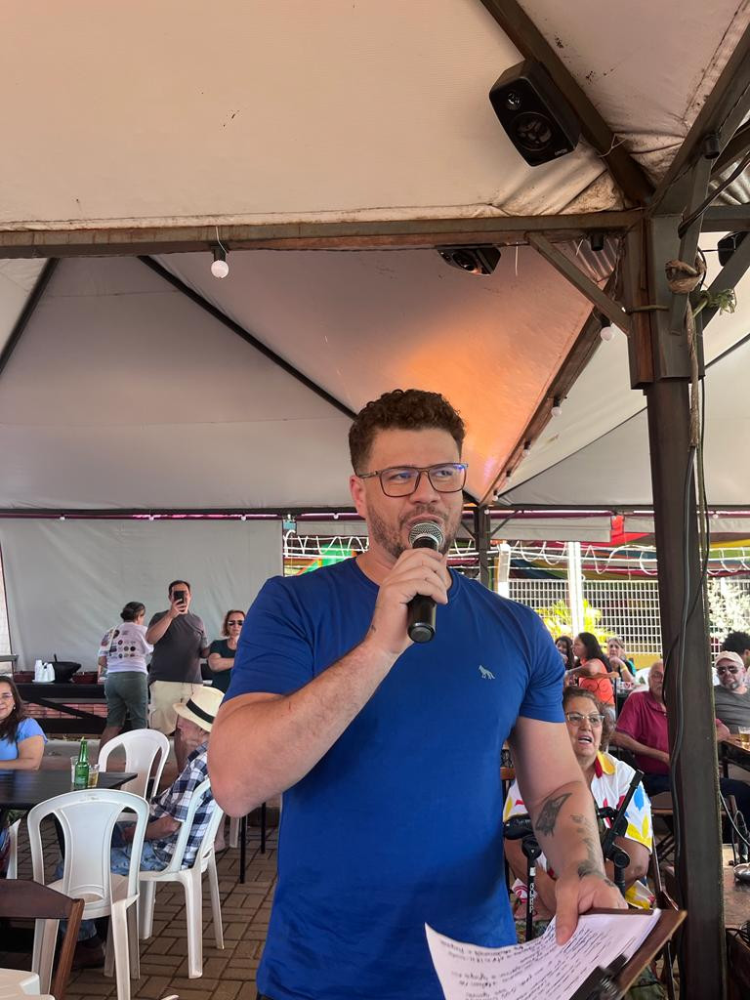
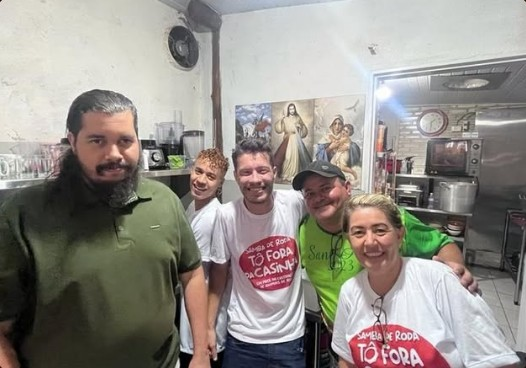
Por que castração
Menos ninhadas sem lar, menos animais doentes e famintos, mais bichos com chance de adoção.
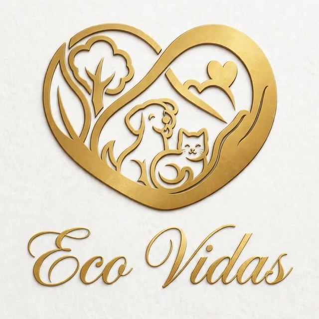
Para onde vai o dinheiro
Toda a renda do Tô Fora da Casinha é doada à Eco Vidas, nossa parceira, para a castração de animais de rua.
Quem patrocina, ajuda a castrar.
Nossa história
Domingo, 9 de julho de 2023

Sábado, 2 de dezembro de 2023
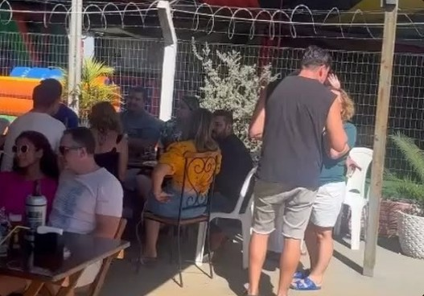
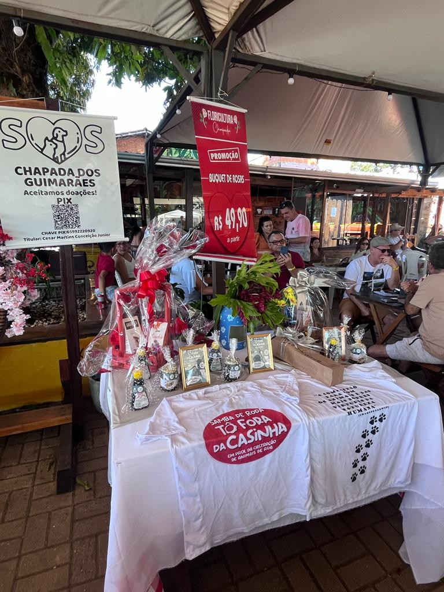
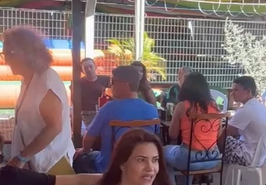
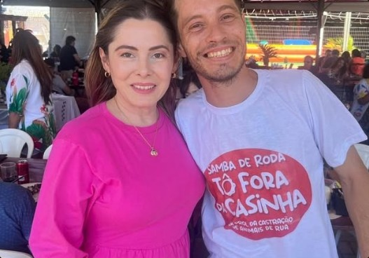
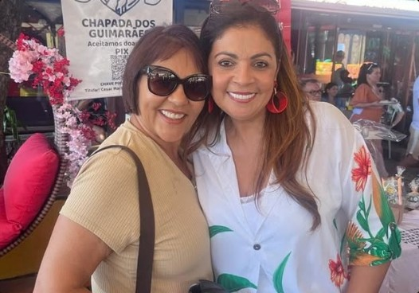
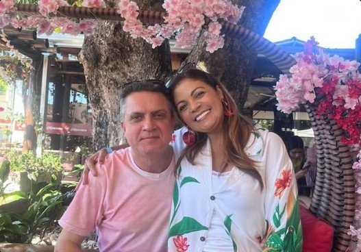
Como funciona
Para o patrocinador
Formas de apoiar
Um produto, voucher ou serviço da sua empresa.
Ingredientes da feijoada, bebidas, descartáveis.
Som, impressão, camisetas, divulgação.
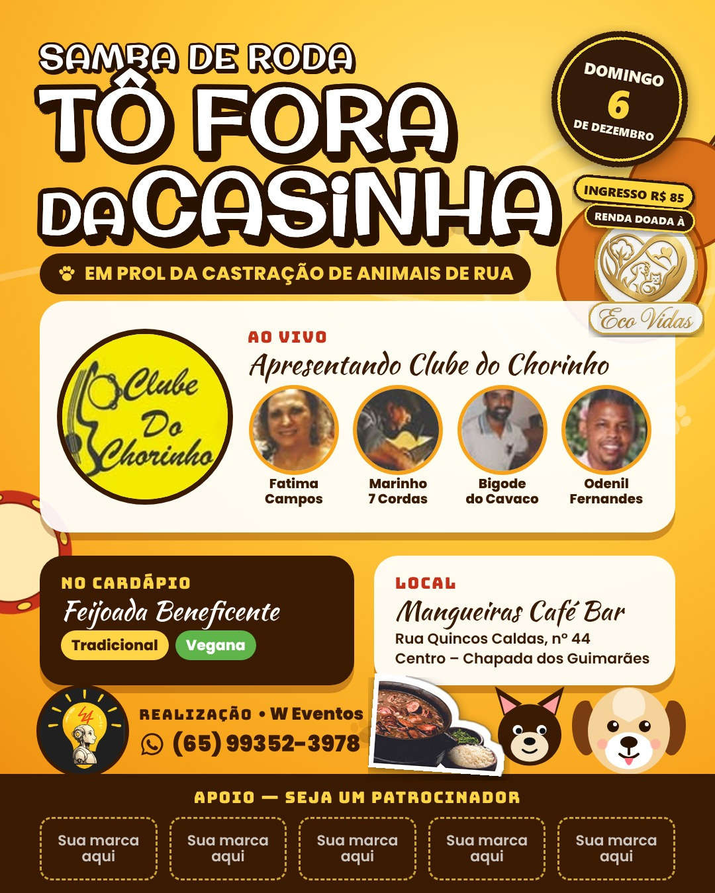
Vem aí
Domingo, 6 de dezembro
Ingresso: R$ 85,00
Coloque sua marca nessa roda e ajude a tirar mais bichinhos da rua.
WhatsApp (65) 99352-3978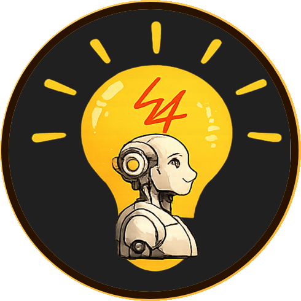